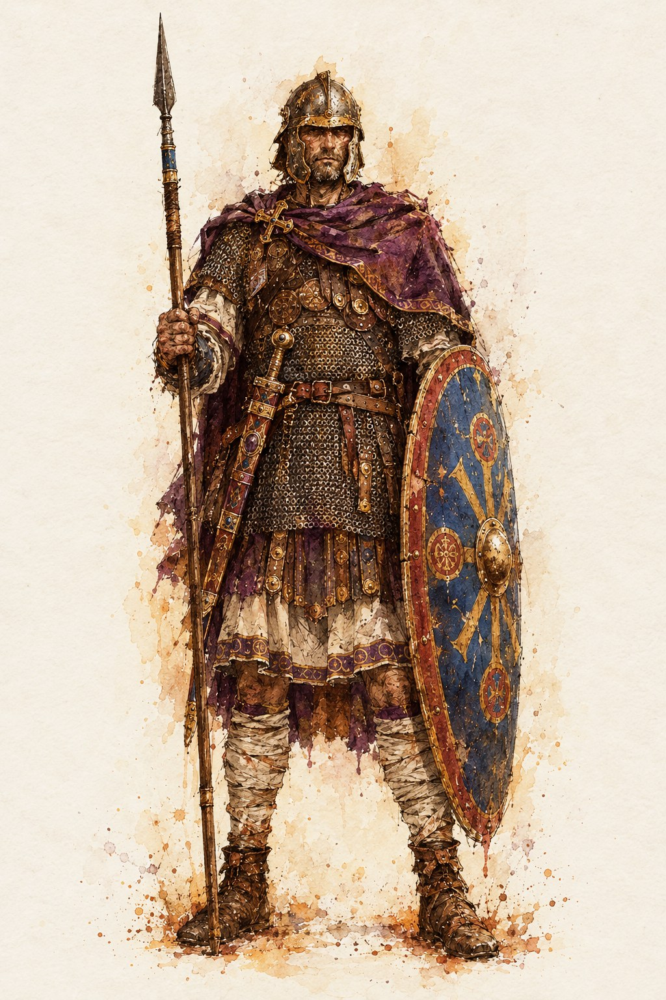
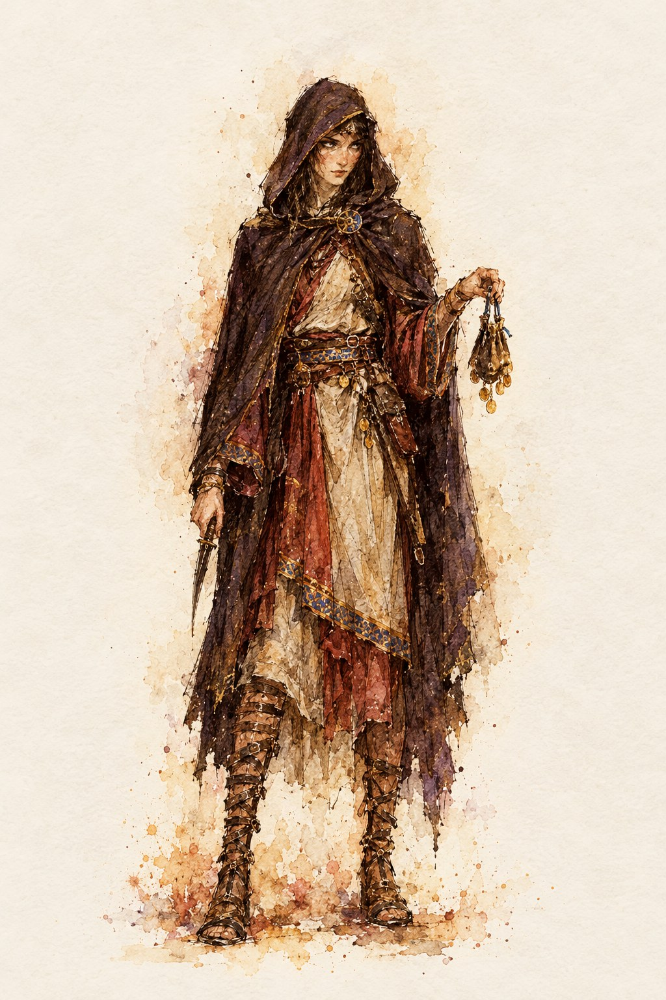
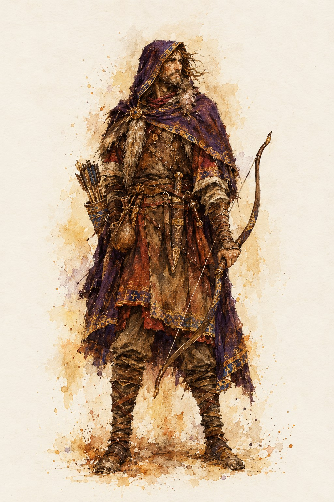

The six genre-neutral playbooks: Bellator, Furcifer, Savant,
Interlocutor, Explorator and Adept. Each has eight special abilities, a
capstone and starting equipment for three genres. Setting books can
reskin these six or add new ones.
The noun of the character sentence.
Element |
Detail |
|---|---|
Base pools |
Sōma / Mētis / Psychē / Pneuma, totalling 36. Add 4 points of your choice and +2 from your Descriptor |
Edge |
3 points: the fixed Edge listed, plus 1 point from the listed choices |
Anchor skill |
Must be rated +3 or +4 in your pyramid |
Suggested skills |
A recommended pyramid; change it freely |
Playbook tags |
Choose 2 power tags from the playbook's list |
XP trigger |
One playbook behaviour that earns XP (Core Rules §12.1) |
Special abilities |
1 free at creation, and up to 2 more at 1 Refresh each. A ★ Major costs 1 more (§1.2) |
Starting equipment |
Signature items (choose 1 of 2), playbook kit, and always-carried items |
BIG examples |
Sample Beliefs, Goals, and Instincts |
Relationships |
1 ally and 1 rival from the playbook's list |
★ Major — costs 1 Refresh whenever you take it. A ★ creation extra therefore costs 2 Refresh in total, and so does a ★ veteran ability.
◆ Capstone — unlocked after 12 Advances if you have at least 4 abilities from this playbook. Take it as an Advance; it costs no Refresh. One capstone per character.
Veteran abilities: after 6 Advances, you may take an ability from another playbook as an Advance. It costs 1 Refresh, plus 1 if it is ★.
Ability limits. These apply to every ability in this chapter, so the entries don’t repeat them:
Free waives only the listed cost. No ability grants an extra scripted turn or bypasses rotation, the action interaction or the declared stakes unless it says so. Automatic success replaces the roll for an otherwise permitted action (Core Rules §10.5).
Extra Power, extra Disposition loss and extra status tiers are separate bonuses; each improves only the component it names (Core Rules §10.6).
Protection, reduction and redirection don’t reach shared Disposition loss or protected payments (accepted injuries, running-dry statuses, concession costs and costs an ability calls accepted payments) unless the ability names them (Core Rules §6, §10.7).
A starting-Disposition bonus is a flat modifier: apply it before the minimum of 1 and Superiority, and don’t reapply it when the same struggle changes conflict type (Core Rules §10.2–10.3).
A fact, Truth or flashback an ability declares can’t contradict resolved events, and information doesn’t recalculate Superiority after setup.
Term |
Meaning (core section) |
|---|---|
Power |
Successes generated by a roll; spent on Effects (§2.5, §5) |
Effort |
Spend 3 − Edge from a pool for a bonus die (before rolling) or +1 Power (after a success) (§2.4) |
Resist |
Roll 2 + Edge d12 and pay pool points by the highest die (no Edge reduction); at negative Edge, roll 1d12 (cost +1 at Edge −2 or lower, maximum 3). Reduce a status by 2 tiers (§6) |
Status |
Tiered condition 1–6; tier 6 applies its scope and breaking-point rule, subject to explicit setting exceptions (§5.1, §6.3) |
Truth |
Scene, site, region, or campaign tag that shifts Difficulty by ±3 (§8) |
Disposition |
One shared total per side measuring its ability to pursue this conflict’s objective, not individual health (§10.9) |
Injury trade |
Once per character per conflict, accept a tier-2/3/4 injury to cancel 1/2/3 Disposition loss; at most one participant trades per Attack or Feint (§10.11) |
Dying |
Life-threatening tier-6 physical harm with lethal stakes: 3-segment clock; Medicine vs. Hard 18 stabilises (§6.7) |
Checks / Grind |
Players' Turn currency and the hardship clock (Module B) |
Before a mission, choose your load. During play, declare items from your playbook kit as you need them and mark their load.
Load |
Capacity |
Effect |
|---|---|---|
Light |
3 |
You blend in; nothing obvious marks you as armed or burdened |
Normal |
5 |
You look ready for trouble |
Heavy |
7 |
You're encumbered: Mētis Effort costs +1 and Stealth Difficulty is one step higher |
Signature items are chosen at creation and always count against load when carried (most are 1–2).
Always-carried items (load 0) are always on you.
Items marked (0) cost no load.
Every item is a power tag when it's relevant, e.g. crowbar helps Athletics to force a door. Item tags count toward the +2 tag cap.
Weapons also give one or more conflict action tags (Core Rules §10.10), e.g. +1 Attack. Do not count an item’s general tag and action tag twice for the same benefit on one roll.
Quality: a fine or advanced item gives the one extra benefit its entry lists (it doesn’t raise the cap). If you use the optional qualities in Core Rules §10.10, record each benefit once.
Escalation: some items carry the Escalation tag (Core Rules §9.3). Carried openly into a scene, each gives the GM 1 Woe.
Declare active conflict equipment before scripting each exchange. Switching gear doesn’t refresh a once-per-conflict quality, restore lost gear or change the script (Core Rules §10.10). Gear narration alone adds no status to an ordinary Attack.
Item |
Load |
Effect |
|---|---|---|
Light armour |
1 |
Armour 1: when you Resist physical harm, reduce it by 1 extra tier |
Heavy armour |
2 |
Armour 2: reduce by 2 extra tiers; Mētis Effort +1 while worn (doesn’t stack with Heavy load) |
Shield / riot shield / energy barrier |
1 |
+1 Defend in Fight conflicts; counts as cover outside conflicts |
Armour that absorbs a tier-4+ hit is damaged (−1 Armour) until repaired during downtime. Armour never reduces Disposition loss or a protected payment (Core Rules §6, §10.7).
Load |
Fantasy |
Modern |
Sci-Fi |
|---|---|---|---|
(0) |
Belt knife, flint & steel, coin purse |
Phone, wallet, keys, pocketknife |
Comm unit, credchip, multitool |
1 |
Rope (15 m), lantern & oil, trail rations (2 days) |
Flashlight, first-aid kit, water & snacks |
Glow rod, medpatch ×2, ration bars |
1 |
Bedroll & blanket |
Duffel with spare clothes |
Thermal sheet & sleep sack |
1 |
Crowbar or pry bar |
Crowbar or bolt cutters |
Hydraulic pry tool |
2 |
Tent or tarp |
Tent or camping kit |
Pop-up shelter |

Muscle, grit, and a willingness to stand in front of trouble. Soldiers, brawlers, bouncers, gladiators, mercenaries, security officers.
Base pools (Sōm / Mēt / Psy / Pne) |
12 / 10 / 6 / 8 |
|---|---|
Edge |
Sōma 2, plus 1 in Mētis or Pneuma |
Anchor skill |
Fight or Brawl |
Suggested skills |
+4 Fight · +3 Athletics, Endure · +2 Brawl, Intimidate, Shoot · +1 Notice, Will, Survival, Medicine |
XP trigger |
Address a challenge with force or threats |
Playbook tags (choose 2): built like a wall · veteran of the line · scarred and unbothered · iron grip · knows how a fight will go · the look that stops trouble
# |
Ability |
Effect |
|---|---|---|
1 |
Juggernaut |
When you Resist physical harm with Sōma, reduce the status by 3 tiers instead of 2. |
2 |
Brutal |
Once per roll, when you spend Power on a successful Fight or Brawl Attack, choose one: remove 1 additional Disposition with ordinary Attack loss, or raise a harmful status the Attack inflicts by 1 tier for free. It adds no status to an ordinary conflict Attack and doesn’t improve a creature-specific finishing procedure. |
3 |
Bodyguard |
When an ally within reach would suffer an imposed consequence you can plausibly intercept, take it instead. Declare this before their Resistance and use your own reduction; if you Resist, your Edge counts as 1 higher. You can’t take shared Disposition loss, a protected payment or an area effect that already hits you both. |
4 |
Cleave |
When you attack a group or minions, you get one free Extra Feat per roll (hit a second target, break their line, and so on). |
5 |
Menacing |
You may use Sōma for Intimidate Effort and Resistance. When you succeed on Intimidate against minions, spend 1 Momentum to make them flee, surrender, or freeze. |
6 |
Pain Tolerance |
Ignore the roll penalty from harmful physical statuses of tier 1–2; at tier 3+, reduce it by 1. Only the penalty changes: the tier, stacking, recovery, Taken Out, Dying and Scars work normally. |
7 |
★ Berserker |
Once per scene, enter a fury: you get +1 bonus die (free) on Fight, Brawl, and Athletics rolls for the rest of the scene. You can’t script Defend or retreat. At scene end, lose 2 Sōma (paid in full) or take Weary (Module B; without it, exhausted-2 until a night’s rest); either is an accepted payment. |
8 |
★ Unstoppable |
Once per scene, when a harmful physical status on you reaches tier 6, record it and any Scar, but delay being Taken Out by it until the scene ends. You keep acting, with its normal roll penalty. At scene end you’re Taken Out unless treatment or an ability has lowered it below tier 6. This doesn’t postpone Dying or death, restore a lost limb, protect you from other statuses or prevent a shared-Disposition defeat. |
◆ |
Legend of the Field |
Your reputation is a Campaign Truth ("Everyone knows [name]"). In Fight conflicts, enemy starting Disposition is −2 (a flat modifier, §1.2), and the GM pays +1 Woe for reinforcements while you stand. |
Signature weapon (choose 1)
Genre |
Option A |
Option B |
|---|---|---|
Fantasy |
Greataxe or warhammer (2) — +1 Attack, crushing blows |
Longsword & shield (2) — +1 Attack, +1 Defend |
Modern |
Combat shotgun (2) — +1 Attack, room-clearer |
Baseball bat & pistol (2) — +1 Attack (bat), sidearm |
Sci-Fi |
Shock maul (2) — +1 Attack, stuns on hit (spend 1 Power: add dazed-1) |
Vibro-blade & energy barrier (2) — +1 Attack, +1 Defend |
Playbook kit (declare during play)
Load |
Fantasy |
Modern |
Sci-Fi |
|---|---|---|---|
1 |
Mail shirt (light armour) |
Tactical vest (light armour) |
Ballistic weave (light armour) |
2 |
Plate harness (heavy armour) |
Riot gear (heavy armour) |
Combat exo-plate (heavy armour) |
1 |
Throwing axes ×3 — +1 Attack (range) |
Collapsible baton — +1 Attack |
Concussion grenades ×2 — +1 Maneuver |
1 |
Manacles & chain |
Zip-cuffs & pepper spray |
Mag-cuffs & stun prod |
1 |
Whetstone & armourer's kit |
Gun-cleaning kit & spare mags |
Field repair kit |
1 |
Flask of strong drink |
Energy drinks & painkillers |
Stim-shot (restore 2 Sōma, once) |
Always carried (0): Fantasy: knuckle-wraps, battle trophy. Modern: brass knuckles, gym bag. Sci-Fi: reinforced gloves, unit insignia.
Belief: "Strength is only worth something when it protects the weak." / "Every fight I walk away from comes back worse."
Goal: "Get the merchant to the city gates alive." / "Find out who hired the thugs."
Instinct: "Always stand between my friends and the door." / "Never let an insult pass in public."
Relationships: Ally — an old comrade-in-arms, a trainer, a medic who's patched you up too often. Rival — the one who beat you once, a former commander, a rival enforcer.

Quiet, precise, and always three exits ahead. Thieves, spies, scouts, assassins, infiltrators, saboteurs.
Base pools (Sōm / Mēt / Psy / Pne) |
8 / 12 / 8 / 8 |
|---|---|
Edge |
Mētis 2, plus 1 in Psychē or Sōma |
Anchor skill |
Stealth |
Suggested skills |
+4 Stealth · +3 Notice, Craft · +2 Athletics, Deceive, Shoot · +1 Fight, Tech, Investigate, Drive/Pilot |
XP trigger |
Address a challenge with stealth or precision |
Playbook tags (choose 2): light on my feet · eyes in the back of my head · steady hands · knows the underworld · forgettable face · patient as a stone
Opportunist and Deadly Precision need an opening: an individual opponent who is unaware of you, or whose action this volley has a pending Impede (Core Rules §10.6), and your approach must actually use it. Hiding your intent isn’t the same as being unnoticed, though an opponent busy with your visible allies may not know you’re there. An ongoing harmful status isn’t Impede.
Check once, after actions and approaches are revealed and before anything rolls; the opening then lasts through the volley. A trumped action never qualifies through Impede. Meeting both triggers counts once.
Outside scripted conflicts, check unawareness just before the roll. Whether your action reveals you depends on what actually happens in the fiction.
# |
Ability |
Effect |
|---|---|---|
1 |
Ghost |
Your first Effort on each Stealth roll costs 0 pool points. Once per scene, when you’re spotted, spend 1 Momentum to declare you were never seen; you’re in a nearby hidden position. Declare it before the consequences of being spotted resolve; it doesn’t undo anything already resolved. |
2 |
Opportunist |
When your permitted action against an individual opponent has an opening, gain +1 Power on a success, once per action. This includes an independent Success at a Cost or an automatic success, but not a losing, tied or trumped action. Spend it only on Effects that action permits. |
3 |
Light Fingers |
When you succeed on a theft, plant, or sabotage roll (Stealth or Craft), gain a free Extra Feat. |
4 |
Infiltrator |
Once per roll, ignore one Truth that would raise the Difficulty of sneaking, climbing, or bypassing security. |
5 |
Quick Reflexes |
Outside scripted conflicts, you always act first when violence breaks out. In conflicts, changing one of your unrevealed scripted actions costs 1 Momentum instead of 2, at the normal timing. |
6 |
Escape Artist |
When you Resist capture, restraint, falls, or traps with Mētis, the cost is 0 on a Resistance result of 5+. |
7 |
★ Flashback |
Once per mission, declare a flashback to something you prepared earlier. Pay Momentum by plausibility: 0 (obvious), 1 (reasonable), 2 (a stretch), 3 (wild). Then roll as normal; on a success, it happened. It can’t reverse paid costs or outcomes. |
8 |
★ Deadly Precision |
When your Attack against an individual opponent has an opening, choose one, once per action: remove 1 additional Disposition when you commit Power to ordinary Attack loss, or, if the Attack may inflict a harmful status, buy one status against that target for half its tier in Power, rounded up (tiers 1–2 cost 1, 3–4 cost 2, 5–6 cost 3). The discount applies to the purchased tier, before Resistance and stacking, and changes only the price. It doesn’t apply to Feint, hazards, backlash or other purchases. |
◆ |
Nobody Sees Me Coming |
Once per session, declare you’re already somewhere you could plausibly have reached. Your first roll there gets +2 bonus dice for free, and the GM can’t spend Woe to reveal you during that roll. |
Both abilities can apply to the same action, and Opportunist’s +1 Power can pay Deadly Precision’s discounted price. Where two status prices apply, use the lowest; they don’t combine.
Against an area, each ability gives its benefit once: Opportunist +1 Power, Deadly Precision +1 Disposition loss or one discounted status against one qualifying target. A shared area-status purchase uses the normal price (Core Rules §10.17).
Both work in any conflict type where the opening helps the approach, such as a precision Attack in an Argument. Neither unlocks a status purchase or improves staking, killing strikes or another creature-specific finishing procedure, and a helpless target doesn’t authorise an otherwise unavailable Attack.
Signature item (choose 1)
Genre |
Option A |
Option B |
|---|---|---|
Fantasy |
Twin daggers (1) — +1 Attack, +1 Feint |
Shortbow & black-fletched arrows (1) — +1 Attack (range), silent shots |
Modern |
Suppressed pistol (1) — +1 Attack, quiet |
Lockpicks & bypass kit (1) — opens what's closed, Advance security clocks +1 on a successful roll |
Sci-Fi |
Needle pistol (1) — +1 Attack, silent, toxin-loaded |
Holo-cloak (1) — +1 Feint, bends light (Stealth tag) |
Playbook kit
Load |
Fantasy |
Modern |
Sci-Fi |
|---|---|---|---|
1 |
Thieves' tools |
Lockpicks & electronic bypass |
Slicer kit |
1 |
Grappling hook & silk cord |
Climbing harness & line |
Monofilament line & grapple gun |
1 |
Dark hooded cloak — shadow-dyed |
Black clothing & balaclava |
Thermal-masking suit |
1 |
Caltrops & smoke vials — +1 Maneuver |
Smoke grenade — +1 Maneuver |
Sensor jammer — +1 Maneuver |
1 |
Garrotte & poison vial |
Burner phones ×2 |
Spy drone (Discover, 1 use per scene) |
1 |
Padded leather (light armour) |
Concealed vest (light armour) |
Flex-mesh undersuit (light armour) |
Always carried (0): Fantasy: hidden blade, chalk. Modern: hairpin picks, earpiece. Sci-Fi: implanted lockpick, false ID chip.
Belief: "Everyone has a price; I just haven't found mine." / "The less blood, the better the job."
Goal: "Get the ledger out of the counting house." / "Learn who sold out my old crew."
Instinct: "Always check for a second way out." / "Never touch anything without gloves."
Relationships: Ally — a fence, a forger, a former mentor. Rival — an inspector who's close to catching you, a rival thief, the partner who betrayed you.
Knowledge is a weapon, a shield, and a cure. Scholars, detectives, scientists, physicians, archivists, engineers.
Base pools (Sōm / Mēt / Psy / Pne) |
7 / 8 / 13 / 8 |
|---|---|
Edge |
Psychē 2, plus 1 in Pneuma or Mētis |
Anchor skill |
Lore or Investigate |
Suggested skills |
+4 Lore · +3 Investigate, Medicine · +2 Notice, Tech, Empathy · +1 Persuade, Will, Craft, Arcana |
XP trigger |
Address a challenge with knowledge or insight |
Playbook tags (choose 2): read everything twice · eye for detail · steady surgeon's hands · speaks the old tongues · respected in academic circles · thinks in diagrams
# |
Ability |
Effect |
|---|---|---|
1 |
Encyclopedic |
Once per scene, ask one Discover question about a subject covered by your Lore without rolling. |
2 |
Analyze |
When you study a foe or obstacle, each Discover you buy also reveals one weakness tag of the target. Creating a Truth that exploits a revealed weakness costs 1 Power less (Core Rules §5). The Truth is leverage, not automatic victory. |
3 |
Field Medic |
Restore effects from Medicine cost 1 Power per 2 tiers, within the lasting-injury limits (Core Rules §6.6). You can treat Sick (Module B) at Standard Difficulty instead of Hard. Healing doesn’t restore pools or Disposition, refresh injury trades or erase Scars. |
4 |
Steady Mind |
When you Resist confusion, illusion, deception, or forbidden knowledge with Psychē, reduce the status by 3 tiers. |
5 |
Decipher |
Codes, unknown languages, and ancient devices give way. Each success on a deciphering roll advances its clock 1 extra segment. This is clock progress only, not Power or Disposition loss. |
6 |
Briefing |
When an ally acts on information you gave them this scene, they get +1 (counts as a tag, within the tag cap). Once per scene, give the whole party this bonus. |
7 |
★ Connect the Dots |
Once per session, propose a hidden Truth based on clues you’ve found. The GM either makes it true or tells you one true hidden Truth about the situation instead. |
8 |
★ I Planned for This |
Once per scene, after any ally rolls but before Power is spent or consequences apply, spend 2 Psychē to let them reroll all dice and keep the better result. This replaces that roll; it isn’t an extra action. |
◆ |
Master of the Field |
Choose one field, about as wide as a single skill (medicine, occult, engineering, history). The GM can refuse a field that would cover most of your rolls. Rolls in that field against a Difficulty, including independent conflict tests, are one Difficulty step lower versus tests are unchanged. Once per session, ask a Discover question about what will happen in that field; the GM answers truthfully. |
Art placeholder
A cluttered study: open books, an astrolabe and notes pinned under a
candle.
Signature item (choose 1)
Genre |
Option A |
Option B |
|---|---|---|
Fantasy |
Annotated grimoire / great reference (1) — the answer is in here somewhere; once per scene, +1 to Lore |
Physician's satchel (1) — herbs and blades; Restore +1 tier once per scene; lasting-injury treatment limits still apply |
Modern |
Laptop with research databases (1) — online archive |
Forensics kit (1) — evidence never lies; +1 to Investigate at crime scenes |
Sci-Fi |
Datapad with AI assistant (1) — ask the archive; one free Discover per session |
Bioscanner (1) — reads the body; Medicine and Notice tag |
Playbook kit
Load |
Fantasy |
Modern |
Sci-Fi |
|---|---|---|---|
1 |
Journal, ink, and charcoal |
Notebook, camera, and voice recorder |
Holo-recorder |
1 |
Magnifying lens & specimen jars |
UV light & evidence bags |
Spectral analyser |
1 |
Herbalist's kit |
Full first-aid kit |
Advanced medkit |
1 |
Quarterstaff — +1 Defend |
Taser — +1 Maneuver |
Stun baton — +1 Maneuver |
1 |
Scroll case with maps |
Tablet with offline maps |
Star charts / topographic uplink |
1 |
Alchemist's reagents (1 cypher-like use: Create smoke, light, or acid) |
Chemistry kit |
Nanite sample kit |
Always carried (0): Fantasy: spectacles, chalk. Modern: reading glasses, pen. Sci-Fi: translator earpiece, stylus.
Belief: "No knowledge is forbidden; only misused." / "The dead deserve the truth about how they died."
Goal: "Translate the inscription before the eclipse." / "Identify the poison."
Instinct: "Always take a sample." / "Never trust a source I can't verify."
Relationships: Ally — a former teacher, a librarian, a patient who owes you their life. Rival — an academic rival, an ex-colleague who stole your work, a cultist who wants your research.
Words open doors that swords can't. Diplomats, con artists, nobles, negotiators, preachers, captains.
Base pools (Sōm / Mēt / Psy / Pne) |
7 / 9 / 9 / 11 |
|---|---|
Edge |
Pneuma 2, plus 1 in Psychē or Mētis |
Anchor skill |
Persuade |
Suggested skills |
+4 Persuade · +3 Empathy, Deceive · +2 Will, Notice, Intimidate · +1 Lore, Fight, Stealth, Investigate |
XP trigger |
Address a challenge with charm, lies, or bargaining |
Playbook tags (choose 2): silver tongue · friends in every port · reads people like books · noble bearing · a hundred faces · calm under fire
# |
Ability |
Effect |
|---|---|---|
1 |
Silver Tongue |
When you Persuade or Deceive, creating a Truth about a target’s attitude (convinced, trusts us, fooled) costs 1 Power less (Core Rules §5). In a conflict, the Truth gives leverage, not the disputed objective. |
2 |
Read the Room |
Spend 1 Power on Discover to learn an NPC’s Belief, Goal, or Instinct. You get +1 (counts as a tag, within the tag cap) against them for the scene. |
3 |
Network |
Once per session, declare a contact in the current location as a Truth (contact: harbourmaster Elsa). The GM gives them a quirk or something they want in return. |
4 |
Smooth Recovery |
Once per scene, when you fail a Persuade, Deceive or Empathy test against a Difficulty, before Power or consequences apply, turn it into Success at a Cost with 1 Power, whatever the margin. Pay the Success at a Cost price instead of ordinary-failure Woe; doubles and other separate consequences still apply. It works on independent tests, not on losing, tied or trumped versus tests. |
5 |
Many Faces |
With a moment to prepare, Create the Truth I belong here for 1 Power. It lasts the scene and removes one Truth that would raise the Difficulty of mingling or entry. It doesn’t settle a contested conflict objective. |
6 |
Command |
When your side scripts an exchange and you can act and communicate, name one volley and its actor: that actor may act out of rotation, even in consecutive volleys. Commit it with the script. It still holds if you’re later Taken Out, but can’t make an unavailable actor act; record the turn normally, then resume rotation. Separately, when an ally succeeds with Defend and commits at least 1 Power to Disposition recovery, add +1 recovery (up to starting Disposition). Each benefit applies once per exchange for your side, however many Command users it has. |
7 |
★ Inspire |
You can spend your Tychē Points on allies” rolls. Enhance effects you create for allies cost 1 Power per 2 tiers. |
8 |
★ Crowd Work |
You influence a group as if it were one person. In Argument or Negotiation conflicts where the other side has two or more participants (a crowd, a council, a rival delegation), your successful Attacks remove 1 additional Disposition with ordinary Attack loss, however many people that side holds. |
◆ |
Word Is Law |
Once per session, a non-villain NPC agrees to a reasonable request without a roll. In Argument and Negotiation conflicts, your side starts with +3 Disposition (a flat modifier, §1.2). |
Signature item (choose 1)
Genre |
Option A |
Option B |
|---|---|---|
Fantasy |
Signet ring & letters of introduction (0) — carries a name that opens doors |
Rapier (1) — +1 Attack, +1 Feint, duelling style |
Modern |
Tailored suit & business cards (0) — looks like money |
Concealed pistol (1) — +1 Attack, never seen it coming |
Sci-Fi |
Diplomatic credentials (0) — official envoy |
Hold-out blaster (1) — +1 Attack, hidden in a sleeve |
Playbook kit
Load |
Fantasy |
Modern |
Sci-Fi |
|---|---|---|---|
1 |
Fine clothes for court |
Formal wear & accessories |
Holo-fashion wardrobe |
1 |
Disguise kit & wigs |
Disguise kit & fake IDs |
Holo-disguise emitter |
1 |
Purse of gold — money talks (1 use per mission: Create tag bribed) |
Credit card — money talks (same) |
Credit stick — money talks (same) |
1 |
Bottle of fine wine |
Gift basket / bottle of scotch |
Rare off-world delicacy |
1 |
Forged seals & papers |
Forged documents |
Spoofed ID chip |
1 |
Brocaded doublet (light armour) |
Armoured coat (light armour) |
Deflector jacket (light armour) |
Always carried (0): Fantasy: perfume, deck of cards. Modern: smartphone with contacts, breath mints. Sci-Fi: translator implant, personal comm.
Belief: "Every war ends at a table; I'd rather start there." / "A lie that saves a life is no sin."
Goal: "Get the guild master to sign the truce." / "Find out what the duke really wants."
Instinct: "Always learn someone's name." / "Never be the first to name a price."
Relationships: Ally — a well-placed patron, a loyal servant, a reporter. Rival — a political opponent, a jilted lover, someone you conned who wants payback.

At home where the map ends. Rangers, hunters, pilots, guides, explorers, scouts, voyageurs.
Base pools (Sōm / Mēt / Psy / Pne) |
11 / 11 / 7 / 7 |
|---|---|
Edge |
Sōma 1, Mētis 1, plus 1 in any pool |
Anchor skill |
Survival |
Suggested skills |
+4 Survival · +3 Notice, Shoot · +2 Athletics, Endure, Drive/Pilot · +1 Stealth, Medicine, Lore, Fight |
XP trigger |
Address a challenge with endurance, travel, or knowledge of the land |
Playbook tags (choose 2): reads the weather · never lost · sharp-eyed hunter · tireless · at home in the wild · steady at the helm
# |
Ability |
Effect |
|---|---|---|
1 |
Pathfinder |
As Guide (Module B), each Power spent on Make Time advances the Journey clock 1 extra segment without Module B, add 1 extra segment to any travel or pursuit clock you advance. Ignore one terrain Truth per leg. |
2 |
Forager |
As Quartermaster (Module B), a success also clears Hungry & Thirsty for the whole party and gives +1 Supplies for free. Without Module B, a successful foraging roll clears a hunger or thirst status for the whole party. |
3 |
Tracker |
When you track or read signs, each Discover you buy gives two answers. |
4 |
Hunter's Eye |
With Shoot, once per roll ignore one Truth about cover, distance, or weather. At long range, gain +1 Power on a success. |
5 |
Ambusher |
In wild terrain, if you had time to prepare, your side starts a Fight conflict with +2 Disposition (a flat modifier, §1.2), and your first-volley Attack resolves as independent whatever the opponent does. |
6 |
At the Helm |
Drive/Pilot rolls with your own vehicle or boat may use Survival. Your vehicle gains one power tag (swift, rugged, nimble). In Chase conflicts, your side gets +2 starting Disposition (a flat modifier, §1.2). |
7 |
★ Animal Companion |
You have a companion (hound, hawk, horse; a drone in sci-fi) with 2 power tags and 1 weakness. Once per scene it gives you a free bonus die (within the +2 cap), or acts on its own using your Survival. Acting on its own in a conflict takes a place in your side’s script and rotation; it has no Disposition or injury trade of its own (Core Rules §10.9). It can take statuses; tier 6 means it’s lost until downtime. |
8 |
★ Weather Sense |
Once per session, declare the weather or terrain Truth for the next scene (thick fog, rising river, clear skies). You also always know the next scene's weather and terrain Truths before the party plans it, including whether a travel leg is a hard stretch (Module B). |
◆ |
One With the Wild |
In wilderness, the party’s Grind clock (Module B) is 2 segments larger, and you can’t be surprised. Once per session, while your party flees through wilderness, declare before the next exchange is scripted that you’re losing the pursuit. If you can lead and everyone escaping can travel or be carried, the pursuit ends with no roll: you reach safety and the pursuers lose your trail. It doesn’t defeat them, recover anything left behind or undo injuries and paid costs, and the chase can’t resume without a new discovery or changed circumstances. |
Signature item (choose 1)
Genre |
Option A |
Option B |
|---|---|---|
Fantasy |
Longbow (2) — +1 Attack (range), hunter's draw |
Spear & hatchet (2) — +1 Maneuver (spear), +1 Attack (hatchet) |
Modern |
Scoped hunting rifle (2) — +1 Attack (range), +1 Maneuver |
Canoe or 4×4 truck (vehicle, 0 load) — my rig, Drive/Pilot tag |
Sci-Fi |
Long-las rifle (2) — +1 Attack (range), thermal scope |
Grav-bike or skiff (vehicle, 0 load) — my rig, Drive/Pilot tag |
Playbook kit
Load |
Fantasy |
Modern |
Sci-Fi |
|---|---|---|---|
1 |
Hunting knife & skinning tools |
Survival knife & multitool |
Survival blade with tool kit |
2 |
Tent, bedroll & cookpot |
Lightweight tent, sleeping bag & stove |
Pop-up shelter & thermal pack |
1 |
Snares & fishing line |
Fishing kit & snares |
Auto-snare & water purifier |
1 |
Map case & compass |
GPS, maps & compass |
Topographic scanner |
1 |
Leather jerkin (light armour) |
Waxed-canvas jacket (light armour) |
Environment suit (light armour, sealed) |
1 |
Trail rations & waterskins (+2 Supplies) |
Dehydrated meals & filter (+2 Supplies) |
Nutrient packs & reclaimer (+2 Supplies) |
Always carried (0): Fantasy: tinderbox, whistle. Modern: ferro rod, bug spray. Sci-Fi: emergency beacon, rebreather.
Belief: "The land gives to those who respect it." / "No one gets left on the trail."
Goal: "Reach the trading post before the freeze." / "Find the lost survey team."
Instinct: "Always check the sky before setting out." / "Never camp where you can't see the approach."
Relationships: Ally — a trapper, a bush pilot, a village elder. Rival — a poacher, a rival guide, the company that wants your land.
Power from beyond the ordinary: magic, psionics, faith, or impossible technology. Mages, psychics, priests, hackers, gadgeteers.
Base pools (Sōm / Mēt / Psy / Pne) |
7 / 8 / 9 / 12 |
|---|---|
Edge |
Pneuma 2 (Arcana Adepts) or Psychē 2 (Tech Adepts), plus 1 in any other pool |
Anchor skill |
Arcana (magic, faith, psionics) or Tech (hacking, gadgets) |
Suggested skills |
+4 Arcana · +3 Lore, Will · +2 Notice, Medicine, Persuade · +1 Investigate, Empathy, Deceive, Tech |
XP trigger |
Address a challenge with your powers or gadgets |
Playbook tags (choose 2): touched by the Other · disciplined mind · sees what others can't · blessed · tinkerer's genius · fluent in the old pacts
Every Adept has a Domain: a broad power tag describing what they can do (fire, healing, telekinesis, shadows, machines, networks, the dead, weather).
Workings: within your Domain, you can attempt any effect with your anchor skill. The GM sets Difficulty by scope:
Scope |
Difficulty |
Example (Domain: fire) |
|---|---|---|
Minor, personal |
Easy 12 |
Light a candle, warm your hands |
Significant |
Standard 15 |
Hurl a firebolt, melt a lock |
Dramatic |
Hard 18 |
Wall of flame across a street |
Spectacular |
Formidable 21 |
Set a ship ablaze |
World-shaking |
Heroic 24 (usually a Ritual) |
Call down a firestorm |
Cost: each working costs 1 point from Pneuma (Arcana) or Psychē (Tech), in addition to any Effort.
Backlash: doubles on a failure or cost cause a backlash. The GM picks a fitting status for you (burned-2, drained-2, glitched-2) or a wild effect, in addition to the normal complication. Backlash still applies in conflicts.
Your Domain counts as a power tag on workings (inside the +2 cap).
In a scripted conflict, Domain scope decides only whether a working fits and what it can affect. The working uses a permitted scripted action and resolves normally (independent or versus); scope doesn’t change the Difficulty or add a roll. It adds no status to an ordinary Attack (Core Rules §10.5–10.6). The Testament of Dust Occultist uses the same rule.
# |
Ability |
Effect |
|---|---|---|
1 |
Focused Channel |
Workings inside your Domain cost 0 pool points if you don’t use Effort on that roll. This waives only the 1-point working cost; Backlash still applies. |
2 |
Ward |
You can create protective statuses (warded-X) with Enhance. While warded, an ally reduces supernatural or tech-based harm by +1 tier when Resisting. |
3 |
Sense the Unseen |
Once per scene, ask a free Discover question about hidden supernatural or technological forces nearby. You always notice when such forces are used near you. |
4 |
Overchannel |
Once per roll, when you use Effort for Power on a working, gain +2 Power instead of +1, but take strained-1 as an accepted payment. Once recorded, it recovers normally. |
5 |
Ritual |
Given time, materials, and a safe place, run a working as a progress clock instead of a single roll (8 segments for Formidable, 12 for Heroic). Ritual results can create Site or Region Truths. |
6 |
Bound Servant |
You have a minor spirit, construct, or drone with one power tag and one weakness. It can scout (one free Discover per scene in places it can reach), carry messages, or handle simple tasks. It can’t fight: it’s an asset, not a conflict participant (Core Rules §10.9). |
7 |
★ Second Domain |
Gain a second Domain. Workings in it use the same rules. |
8 |
★ Unleash |
Once per scene, a working hits every target in an area or group, using Area Effects (Core Rules §10.17). Explicit statuses apply at full tier to each target, and conflict Disposition loss follows the same procedure. Afterwards, take Weary (Module B; without it, exhausted-2 until a night’s rest) or lose 3 points (paid in full) from your casting pool; either is an accepted payment. |
◆ |
Ascendant |
Once per session, a Heroic-scope working succeeds automatically with 5 Power, no ritual required. In a conflict, declare it before the roll for your normal action: a trumped action stays trumped, and in a versus test it wins unless the other side also succeeds automatically, which makes a tie. No roll means no doubles. If you use it again before your next downtime, gain a Pneuma or Psychē Scar. |
Signature focus (choose 1)
Genre |
Option A |
Option B |
|---|---|---|
Fantasy |
Staff or wand (1) — conduit; +1 to workings, +1 Defend (staff) |
Holy symbol or ancestral talisman (0) — faith made solid; Resist supernatural harm with Edge +1 |
Modern |
Occult focus (ring, chalk, athame) (0) — conduit |
Custom cyberdeck / laptop (1) — my rig; +1 to Tech workings |
Sci-Fi |
Psi-amp headset (1) — amplifier; +1 to psionic workings |
Neural jack & cyberdeck (1) — direct interface; +1 to Tech workings |
Playbook kit
Load |
Fantasy |
Modern |
Sci-Fi |
|---|---|---|---|
1 |
Grimoire or prayer book |
Occult library on a tablet |
Encrypted data archive |
1 |
Spell components pouch |
Salt, chalk, candles & herbs |
Spare power cells & focus crystals |
1 |
Ritual dagger — +1 Attack |
Pistol — +1 Attack |
Sidearm blaster — +1 Attack |
1 |
Warding charms ×2 (0-Power warded-1 once each) |
Talismans ×2 (same) |
Firewall chips ×2 (same) |
1 |
Robes of the order (light armour, marks my calling) |
Long coat with hidden pockets (light armour) |
Insulated bodysuit (light armour) |
1 |
Scrying bowl or crystal |
Drone with camera |
Micro-drone swarm (Bound Servant gear) |
Always carried (0): Fantasy: a small familiar token, incense. Modern: tarot deck, phone. Sci-Fi: diagnostic implant, data spike.
Belief: "Power is a debt, and I always pay my debts." / "Knowledge should be free; locks are an insult."
Goal: "Seal the rift before the new moon." / "Crack the corporation's archive."
Instinct: "Always ward the room before I sleep." / "Never use my power in front of the authorities."
Relationships: Ally — your teacher, a fellow initiate, an entity you've bargained with. Rival — a rival practitioner, a hunter of your kind, the order that cast you out.
Art placeholder
The six playbooks around a campfire at night, sharing one map.